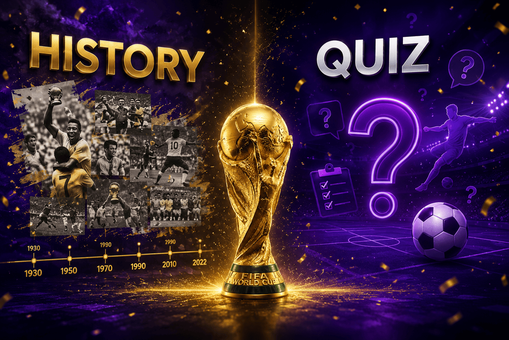
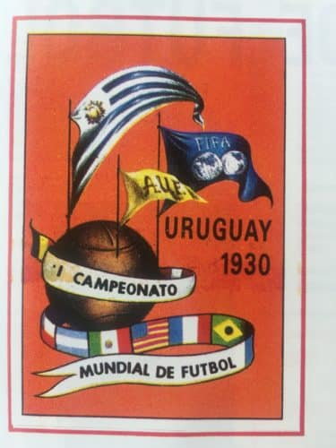
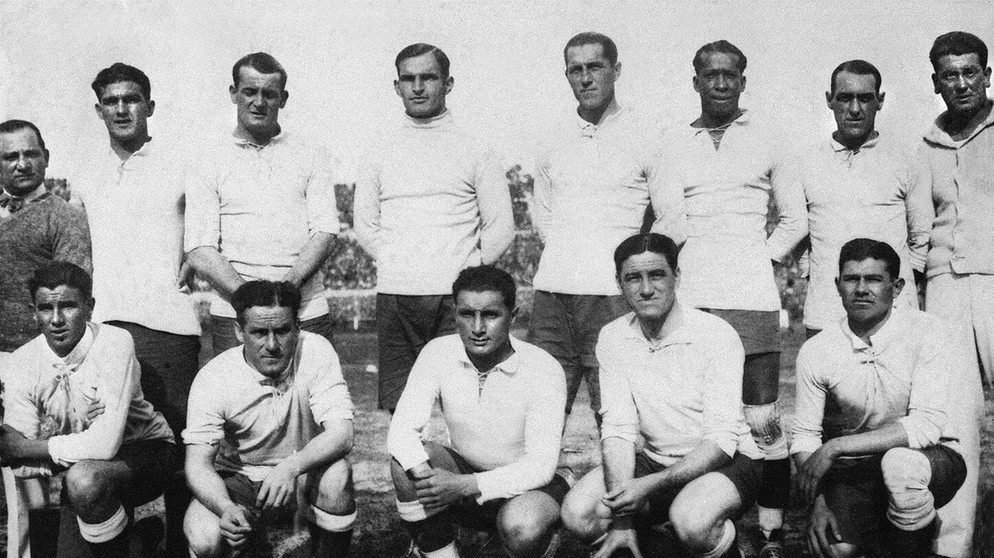
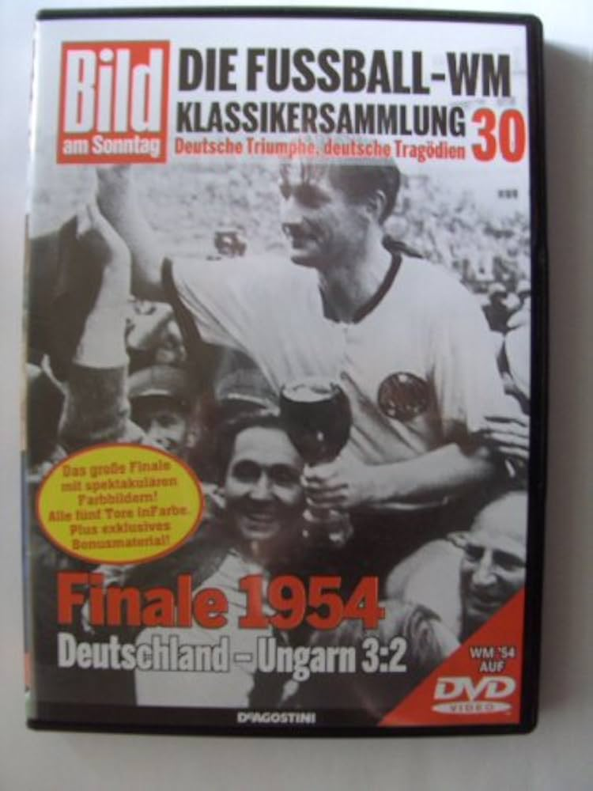
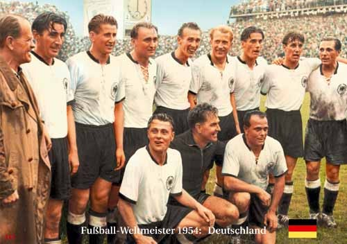
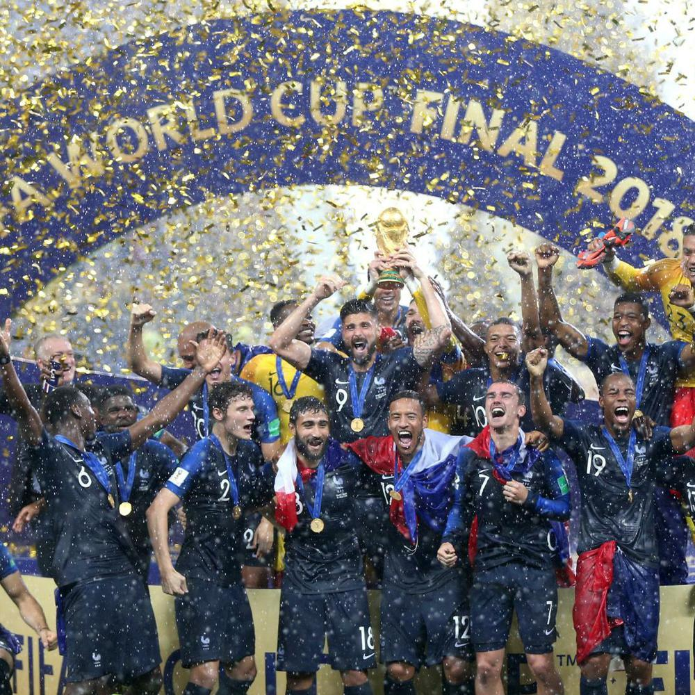
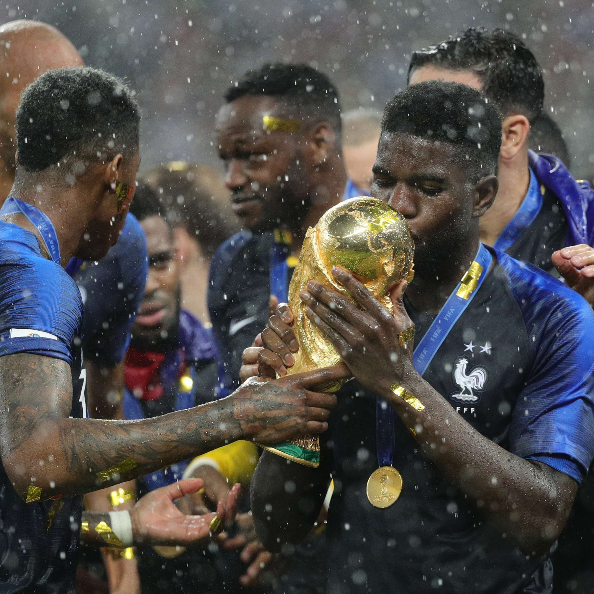
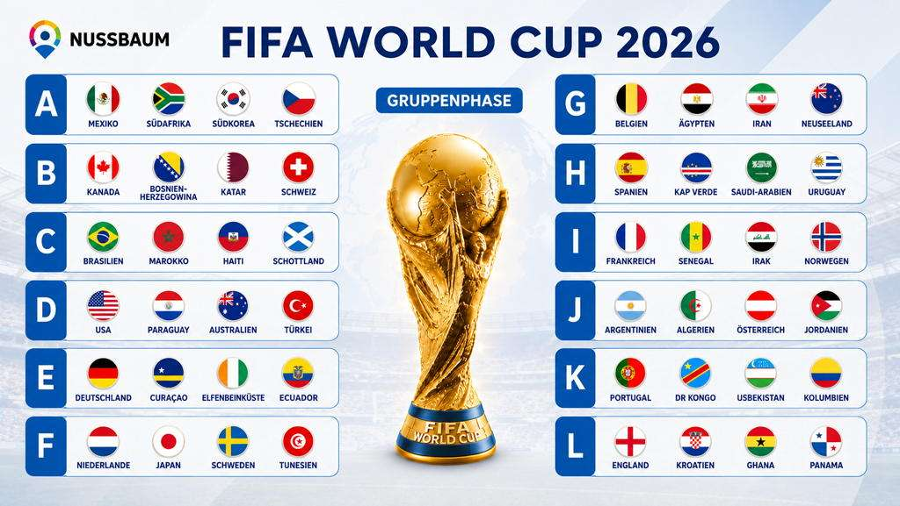
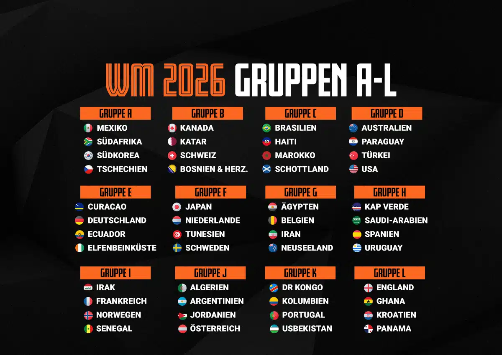

Entdecke mal die Geschichte der FIFA-Weltmeisterschaft und teste dein Wissen

Die Geschichte der Fußball-Weltmeisterschaft
Die FIFA-Weltmeisterschaft ist eines der größten Sportereignisse der Welt. Seit 1930 bringt sie Menschen, Länder und Kulturen zusammen.
Weltmeisterschaft in 1930


Die erste Fußball-Weltmeisterschaft fand in Uruguay statt.
Die erste Fußball Weltmeisterschaft fand 1930 von 13. bis 30. Juli in Uruguay statt. Als Austragungsort diente die Hauptstadt Montevideo. Uruguay wurde deshalb als Spielort für die erste WM der Geschichte ausgewählt, da das Land die beiden olympischen Fussballturniere der Jahre 1924 und 1928 gewonnen hatte und somit die vergangenen Leistungen gewürdigt wurden.
Deutschland wird Weltmeister 1954


Deutschland gewann zum ersten Mal die Weltmeisterschaft.
Die deutsche Nationalmannschaft gewann ihre erste Weltmeisterschaft im Jahr 1954 in der Schweiz. Das Finale fand im Berner Wankdorfstadion statt, wo Deutschland als Außenseiter gegen die favorisierte ungarische Mannschaft antrat. Trotz eines frühen Rückstands von 0:2 gelang es der deutschen Mannschaft, durch Tore von Max Morlock und Helmut Rahn das Spiel auszugleichen und schließlich mit 3:2 zu gewinnen. Dieser Sieg ist als das „Wunder von Bern“ in die Fußballgeschichte eingegangen
Fußball-Weltmeisterschaft in 2018


Frankreich gewann die Weltmeisterschaft in Russland
Die FIFA-Weltmeisterschaft 2018 fand vom 14. Juni bis 15. Juli in Russland statt. Frankreich startete in der Vorrundengruppe C gegen Australien, Peru und Dänemark und qualifizierte sich als Gruppensieger für die K.o.-Runde. Im Achtelfinale besiegten die Franzosen Argentinien 4:3, im Viertelfinale Uruguay 2:0 und im Halbfinale Belgien 1:0. Im Finale am 15. Juli 2018 traf Frankreich auf Kroatien und gewann mit 4:2 im Moskauer Luschniki-Stadion. Die Tore erzielten ein Eigentor von Mario Mandžukić (18. Minute), Antoine Griezmann per Elfmeter (38. Minute), Paul Pogba (59. Minute) und Kylian Mbappé (65. Minute). Kroatien konnte durch Ivan Perišić (28. Minute) und Mandžukić (69. Minute) verkürzen, doch Frankreich behielt die Führung
Die Weltmeisterschaft in 2026


Die Weltmeisterschaft 2026 findet in den USA, Kanada und Mexiko statt.
Ab 11. Juni blickt die Fußball-Welt auf Kanada, Mexiko und die USA. Bei der Weltmeisterschaft geht es um den Titel. Deutschland ist in der Gruppe E angesiedelt und tritt zunächst in Houston,Toronto und New York an, aber wo wird noch gespielt? SPORT1 stellt die 16 Austragungsorte vor!
Video: Große Momente der WM
Dieses Video zeigt einige bekannte Momente aus der Geschichte der Fußball-Weltmeisterschaft.
Das Video kann direkt auf YouTube angesehen werden.

World Quiz
Teste dein Wissen über die Fußball-Weltmeisterschaft.